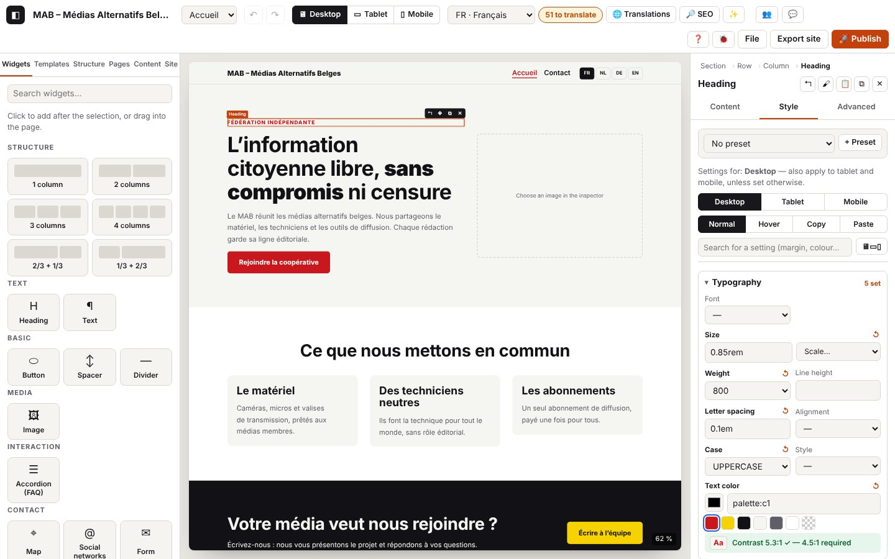

3. Layout and design

On this page
- 3.1 Adjust an element in the inspector
- 3.2 Import an image into a field
- 3.3 Set the style, device by device
- 3.4 Style on hover
- 3.5 Check the contrast
- 3.6 Copy and paste the style
- 3.7 Style presets
- 3.8 Site colours and fonts
- 3.9 Section templates
- 3.10 Custom CSS and advanced settings
- 3.11 Reusable components
- 3.12 Header and footer in blocks
- 3.13 The top of the inspector: path and buttons
- 3.14 Setting up a section, a row, a column
- 3.15 Effects: reveal on scroll, animated hover
- 3.16 Opening a component in a window (popup)
- Codes in this chapter
The log extracts below were captured in French; codes and levels are identical in every language (the messages in your log are in the interface language).
The inspector, on the right, adjusts the selected element: its content (texts, links, images, lists), its style (per device and on hover), and its advanced settings. The Site panel sets what applies to the whole site (colours, fonts, scales, presets, header and footer), and the Templates panel offers ready-made sections and your reusable components.
Log domains
inspector.*: tabs, fields changed (name, type, language, length; never the text), refused values, column layout, bindings, lists, image import.style.*: style setting (property, device, state), reset, refused values, presets, contrast, copy / paste style.template.*: section template inserted, component chosen in the Templates panel.action.component-*: components (create, insert, edit, detach, rename, delete); refusals:action.refused.settings.*: Site panel settings (colours, fonts, scales, presets, header and footer), written by the Site panel; covered here for the design part.- Also useful:
store.commit(each change),store.view(device),store.edit-target(editing a component, the header…),canvas.load.*andcanvas.scale(chapter 2),ui.toast(messages).
3.1 Adjust an element in the inspector
Goal: change an element's content and settings without touching the page.
Steps
- Select the element. Content, Style, Advanced tabs.
- Content: texts per language, drop-down lists, boxes, links, images, list items (+ Element, ↑ ↓ ✕).
- Advanced: anchor (
#contact; accents and spaces are replaced automatically), CSS classes, accessible label, hide on a device or in a language, custom CSS.
What you see: each change shows up straight away in the page.
Expected log (journaux/style-inspecteur.log)
Technical details: expected log
05:10:50.420 +18.85s DEBUG inspector.tab Onglet de l’inspecteur : Contenu {"tab":"content","from":"content","type":"heading"}
05:10:50.440 +18.87s DEBUG inspector.field Champ modifié : Niveau {"key":"level","type":"select","how":"liste","option":"h3"}
…
05:10:50.634 +19.07s DEBUG inspector.field Champ modifié : Texte {"key":"text","type":"inline","lang":"fr","how":"saisie","chars":16}
05:10:50.805 +19.24s DEBUG inspector.tab Onglet de l’inspecteur : Avancé {"tab":"advanced","from":"content","type":"heading"}
…
05:10:50.844 +19.27s DEBUG inspector.advanced Réglage avancé : anchor {"id":"n_1r5g674a09","props":["anchor"]}
…
05:10:51.037 +19.47s DEBUG inspector.advanced CSS personnalisée enregistrée {"id":"n_1r5g674a09","props":["css"],"chars":22}
05:10:51.214 +19.64s WARN inspector.css-refused CSS personnalisée refusée : utilisez seulement des déclarations « propriété: valeur; » (pas d’accolades, de @, d’url() ni de commentaires). {"id":"n_1r5g674a09","chars":27,"start":"color:red}body{display:none","error":{"name":"Error","message":"CSS personnalisée refusée : utilisez seulement des déclarations « propriété: valeur; » (pas d’accolades, de @, d’url() ni de commentaires).","stack":"Error: CSS personnalisée refusée : utilisez seulement des déclarations « propriété: valeur; » (pas d’accolades, de @, d’url() ni de commentaires).\nat sanitizeCustomCss (http://localhost:8791/core/tree.js:251:104)\nat http://localhost:8791/core/tree.js:282:42\nat update (http://localhost:8791/core/tree.js:160:3)\nat setAdvanced (http://localho…
05:10:51.214 +19.64s ERROR ui.toast Message affiché : CSS personnalisée refusée : utilisez seulement des déclarations « propriété: valeur; » (pas d’accolades, de @, d’url() ni de commentaires). {"type":"error"}
05:10:51.385 +19.82s DEBUG inspector.tab Onglet de l’inspecteur : Contenu {"tab":"content","from":"advanced","type":"heading"}To check: inspector.tab (tab, and where you came from); inspector.field with key (field name), type (select, inline, richtext, url, toggle, number, icon…), how (list, typing, box, rich text), lang, and chars (length) or option / value; inspector.advanced (advanced setting). A text typed in the inspector is saved at each letter (store.commit “same undo step”) but logged once, when you leave the field. Each redraw of the inspector: inspector.render (TRACE).
Variants
| Situation | What changes on screen | Log |
|---|---|---|
| Column layout of a row | the columns change width | inspector.layout (INFO) {"spans":[4,4,4],"before":"7-5"} (journaux/style-inspecteur-disposition.log) |
| Link chosen in “Link to a page or a section…” | inspector.link-pick (DEBUG) {"kind":"page"} (or anchor, window (popup)) | |
| Link typed by hand | inspector.field {"type":"url","kind":…}: https, http (not secure), e-mail, phone, anchor… (the address itself is not written) | |
| Box ticked (new tab…) | inspector.field {"type":"toggle","value":true} | |
| List item added, moved up, moved down, deleted | inspector.list (DEBUG) {"action":"ajouté","count":4} | |
| Number field emptied | the previous value stays | inspector.field-empty (DEBUG) |
| Field bound to a collection (card, detail page) | “Bound to the field …” | inspector.bind (INFO) {"field":…,"to":…}; unlink: "to":null |
| ✨ Describe the image (alt text by the AI) | suggested text, marked “to review” | inspector.alt-ai (DEBUG), the ai.* lines (chapter 7), then inspector.alt-ai-ok (INFO); no suggestion: inspector.alt-ai-none (DEBUG) |
| Another participant changes the element while you are in a field | the inspector redraws when you leave the field | inspector.remote-deferred (DEBUG) |
Expected log — link, box, list, image address (journaux/style-inspecteur-variantes.log)
Technical details: expected log
05:10:52.182 +20.61s DEBUG inspector.link-pick Lien choisi dans la liste : page {"kind":"page","value":"page:p_f0ooet9j"}
…
05:10:52.333 +20.76s DEBUG inspector.field Lien modifié : Lien {"key":"link","type":"url","how":"saisie","kind":"http (non sécurisé)"}
05:10:52.387 +20.82s DEBUG inspector.field Champ modifié : Ouvrir dans un nouvel onglet {"key":"newTab","type":"toggle","how":"case","value":true}
…
05:10:52.606 +21.04s DEBUG library.insert Bibliothèque : clic sur « Liste à icônes » {"type":"icon-list","how":"clic"}
…
05:10:52.622 +21.05s INFO action.add Widget ajouté : Liste à icônes {"type":"icon-list","id":"n_6236730x5f","parentType":"column"}
…
05:10:52.962 +21.39s DEBUG inspector.list Élément : ajouté {"key":"items","id":"n_6236730x5f","action":"ajouté","count":4}
…
05:10:53.224 +21.66s WARN inspector.image-url Adresse d’image sans https:// : elle risque d’être refusée ou bloquée {"field":"src","https":false,"chars":26}
…
05:10:53.406 +21.84s INFO store.undo Annuler {"left":24,"redo":1}
…Errors and refusals
| Situation | Message shown | Log | What to do |
|---|---|---|---|
| Value refused by the core (field, list, layout, binding, alt text) | red message | inspector.refused (WARN) with what (field, list, layout, bind, advanced, alt), the field and error | read the message; correct the value |
Dangerous custom CSS (}, @, url(), comments) | “Custom CSS refused: use only “property: value;” declarations…”; field in red | inspector.css-refused (WARN) with the length and the start of the text | write only propriété: valeur; (property: value;) |
3.2 Import an image into a field
Goal: put a photo into an Image widget, a card, a section background, a logo.
Steps
- Content tab (or Style → Background): “Import an image”, choose the file. Or paste the address of an online image (
https://…). - “Remove” takes the image out of the field.
What you see: the preview; the message “Image added as WebP: 800×450 px, 2 KB.”
Expected log (journaux/style-image.log)
Technical details: expected log
05:11:11.410 +39.84s INFO inspector.image.start [inspector.image#1] Import d’une image {"field":"src","type":"image/png","kb":2}
05:11:11.411 +39.84s INFO image.import.start [image.import#1] Import de l’image « c16-photo.png » {"name":"c16-photo.png","type":"image/png","kb":2}
05:11:11.421 +39.85s DEBUG image.import.decode [image.import#1 · 10 ms] Image lue : 800×450 px {"width":800,"height":450,"ms":10}
05:11:11.454 +39.88s DEBUG image.import.encode [image.import#1 · 43 ms] Version principale : 800×450 px, 2 Ko (image/webp) {"w":800,"h":450,"mime":"image/webp","kb":2,"ms":32}
05:11:11.471 +39.90s DEBUG image.import.variant [image.import#1 · 60 ms] Variante 480 px : 1 Ko {"w":480,"kb":1,"ms":15}
05:11:11.473 +39.90s INFO image.import.ok [image.import#1 · 62 ms] Image prête : 800×450 px, 2 Ko (−20 %), 1 variante(s) {"name":"c16-photo.webp","mime":"image/webp","width":800,"height":450,"kbIn":2,"kbOut":2,"gain":20,"variants":[480]}
05:11:11.474 +39.91s DEBUG inspector.image.webp [inspector.image#1 · 64 ms] Image convertie en WebP {"width":800,"height":450,"kb":2,"variants":1}
…
05:11:11.493 +39.92s INFO inspector.image.ok [inspector.image#1 · 83 ms] Image ajoutée : 800×450 px {"asset":"img_vm176qrs","field":"src"}
05:11:11.494 +39.92s INFO ui.toast Message affiché : Image ajoutée en WebP : 800×450 px, 2 Ko.
…To check: the inspector.image run (field, type, size) contains the image.import run (reading, conversion to WebP, variants: chapter 4), then inspector.image.webp and inspector.image.ok with the image's identifier (asset).
Variants
| Situation | Log |
|---|---|
| File picker closed without a file | inspector.image-none (DEBUG) |
Online address https://… | inspector.image-url (DEBUG) {"https":true} |
| Address cleared, or “Remove” | inspector.image-url “Adresse d'image effacée” / inspector.image-remove (DEBUG); the file stays in the project |
Errors
| Situation | Message shown | Log | What to do |
|---|---|---|---|
| Damaged file or unsupported format | “Unreadable image: the file is damaged or incomplete, or this browser cannot decode its format.” | image.import.fail (ERROR) then inspector.image.fail (ERROR) | save the image again as JPEG or PNG, then try again |
Address without https:// (http://, ftp://…) | the image may not be displayed | inspector.image-url (WARN) {"https":false} | use an https:// address, or import the file |
3.3 Set the style, device by device
Goal: adapt size, margins, colours… to desktop, tablet and mobile.
Steps
- Select the element, Style tab.
- Choose the device (the tab's Desktop / Tablet / Mobile buttons, or 🖥 ▭ ▯ at the top). Desktop also applies to the other devices, unless they have their own setting; a tablet setting also applies to mobile.
- Type a value (
24px,1.5rem,50%,auto,clamp(1rem, 3vw, 2rem); a number on its own becomes px) then Enter, or choose from the site's scale (size:xl,space:m). ↺ goes back to the inherited value. - 🖥▭▯ shows the three devices side by side; “Search for a setting” filters the list.
What you see: the value applies in the page; the field shows the inherited value in grey.
Expected log (journaux/style-appareils.log)
Technical details: expected log
05:10:54.654 +23.09s DEBUG style.set Taille = 72px (Ordinateur) {"key":"fontSize","state":"normal","device":"desktop","target":"node","id":"n_2l6m0w3e5i","value":"72px","autoPx":true}
05:10:54.885 +23.32s DEBUG store.view Vue : device=mobile {"device":"mobile"}
05:10:54.887 +23.32s DEBUG canvas.scale Canevas mobile : 390 px {"device":"mobile","width":390,"scale":100,"available":792}
…
05:10:55.352 +23.78s DEBUG style.set Taille = 30px (Mobile) {"key":"fontSize","state":"normal","device":"mobile","target":"node","id":"n_2l6m0w3e5i","value":"30px"}
…
05:10:55.607 +24.04s DEBUG style.reset « Taille » réinitialisé : valeur héritée (Mobile) {"key":"fontSize","state":"normal","device":"mobile","target":"node","id":"n_2l6m0w3e5i"}
05:10:55.856 +24.29s WARN style.refused Valeur refusée pour « Taille » : 12pt (unité ou expression non autorisée) {"key":"fontSize","state":"normal","device":"mobile","target":"node","id":"n_2l6m0w3e5i","value":"12pt","kind":"length"}
05:10:55.857 +24.29s ERROR ui.toast Message affiché : Valeur refusée pour « Taille » : 12pt. Exemples : 24px, 1.5rem, 50%, auto, clamp(1rem, 3vw, 2rem). {"type":"error"}
…
05:10:56.109 +24.54s DEBUG style.reset « Taille » réinitialisé : valeur héritée (Mobile) {"key":"fontSize","state":"normal","device":"mobile","target":"node","id":"n_2l6m0w3e5i"}
05:10:56.170 +24.60s DEBUG store.view Vue : device=desktop {"device":"desktop"}
05:10:56.172 +24.60s DEBUG canvas.scale Canevas ordinateur : 1280 px, réduit à 62 % {"device":"desktop","width":1280,"scale":62,"available":792}
…To check: style.set with key (property), device (desktop, tablet, mobile; tous (all) on hover), state (normal or hover), target (node, preset or multi), value; "autoPx":true when a number on its own was given px; "token":true for a value from the scale; "palette":true for a palette colour. Changing device: store.view then canvas.scale. ↺: style.reset.
Variants
| Situation | What changes on screen | Log |
|---|---|---|
| Device chosen in the Style tab | style.device (DEBUG) {"device":"tablet","from":"desktop"} then store.view (journaux/style-trois-appareils.log) | |
| Three-device view | three fields per setting | style.all-devices (DEBUG) {"on":true}; style.set carries the column's device |
| Several elements selected | the setting applies to all of them | style.set {"target":"multi","count":3} |
| Padding or margins “reset all” | style.reset {"keys":[…]} | |
| Searching for a setting | style.search (TRACE) | |
| Setting requested through Ctrl+K | the field is highlighted | style.focus (DEBUG); not available for this type of element: style.focus-missing (DEBUG) |
Expected log — tablet, three devices (journaux/style-trois-appareils.log)
Technical details: expected log
05:10:56.635 +25.07s DEBUG style.device Onglet Style : réglages pour Tablette {"device":"tablet","from":"desktop"}
05:10:56.635 +25.07s DEBUG store.view Vue : device=tablet {"device":"tablet"}
05:10:56.638 +25.07s DEBUG canvas.scale Canevas tablette : 820 px, réduit à 97 % {"device":"tablet","width":820,"scale":97,"available":792}
…
05:10:57.003 +25.43s DEBUG style.all-devices Vue « trois appareils côte à côte » {"on":true}
…
05:10:57.212 +25.64s DEBUG style.set Taille = 28px (Mobile) {"key":"fontSize","state":"normal","device":"mobile","target":"node","id":"n_2l6m0w3e5i","value":"28px"}
05:10:57.384 +25.82s DEBUG style.all-devices Vue d’un seul appareil {"on":false}
05:10:57.434 +25.86s DEBUG style.device Onglet Style : réglages pour Ordinateur {"device":"desktop","from":"tablet"}
05:10:57.435 +25.87s DEBUG store.view Vue : device=desktop {"device":"desktop"}
05:10:57.436 +25.87s DEBUG canvas.scale Canevas ordinateur : 1280 px, réduit à 62 % {"device":"desktop","width":1280,"scale":62,"available":792}
…Errors
| Situation | Message shown | Log | What to do |
|---|---|---|---|
Unit or expression not allowed (12pt, calc(1px) }body{…) | “Value refused for “Size”: 12pt. Examples: 24px, 1.5rem, 50%, auto, clamp(…).”; field in red | style.refused (WARN) with key, value, device | use px, rem, em, %, vw, vh, ch, or a clamp(), min(), max(), calc() expression |
| The core refuses the setting | red message | style.set-fail (WARN) with error | send the log |
| Review mode | “Review mode…” | store.readonly (WARN), no style.set | — |
3.4 Style on hover
Goal: change the look of a button, a card… when the mouse goes over it.
Steps: Style tab → Hover; only the properties that are useful on hover are offered (colours, border, shadow, transform…); Normal to go back.
What you see: “Settings for: Hover (all devices)”; in the page, the style applies when the mouse passes over.
Expected log (journaux/style-survol.log)
Technical details: expected log
05:10:57.884 +26.32s DEBUG style.state Onglet Style : état survol (réglages communs à tous les appareils) {"state":"hover"}
…
05:10:58.080 +26.51s DEBUG style.set Couleur de fond = palette:c3 (survol) {"key":"background","state":"survol","device":"tous","target":"node","id":"n_5x206n134e","value":"palette:c3","palette":true}
05:10:58.319 +26.75s DEBUG style.state Onglet Style : état normal {"state":"normal"}To check: style.state {"state":"hover"}, then style.set with "state":"survol","device":"tous".
Variants and errors: as in 3.3.
3.5 Check the contrast
Goal: keep texts readable (WCAG AA: 4.5:1, or 3:1 for large text).
Steps: set the text or background colour (Style tab); the badge under the colour gives the real contrast.
What you see: a green badge “Contrast 17.1:1 ✓” or a red one “Contrast 1.8:1 ✗ — 4.5:1 required”; for an image background, “check the contrast by eye”.
Expected log (journaux/style-contraste.log)
Technical details: expected log
05:10:58.636 +27.07s WARN style.contrast-low Contraste insuffisant : 1,8:1 pour 4.5:1 requis {"id":"n_4y660b0u1y","type":"text","ratio":1.76,"required":4.5,"fg":"#bbbbbb","bg":"#f5f5f2"}
05:10:58.646 +27.08s DEBUG style.set Couleur du texte = #bbbbbb (Ordinateur) {"key":"color","state":"normal","device":"desktop","target":"node","id":"n_4y660b0u1y","value":"#bbbbbb"}
…
05:10:59.013 +27.44s DEBUG style.contrast-ok Contraste suffisant : 17,1:1 {"id":"n_4y660b0u1y","ratio":17.11,"required":4.5}
05:10:59.024 +27.45s DEBUG style.set Couleur du texte = palette:c3 (Ordinateur) {"key":"color","state":"normal","device":"desktop","target":"node","id":"n_4y660b0u1y","value":"palette:c3","palette":true}To check: style.contrast-low (WARN) with ratio, required, fg (text) and bg (background) as soon as the contrast becomes insufficient; style.contrast-ok (DEBUG) when it is sufficient again. The contrast is reported when it changes (not at every redraw); the first display of a correct contrast is at TRACE.
Variants
| Situation | Log |
|---|---|
| Image background | style.contrast-unknown (DEBUG) |
| Palette colour too light (Site panel) | settings.color with lowContrast (3.8) |
Errors
| Situation | Message shown | Log | What to do |
|---|---|---|---|
| Contrast cannot be calculated (unreadable colour) | no badge | style.contrast-error (WARN) with error | send the log |
3.6 Copy and paste the style
Goal: give an element exactly the same style as another.
Steps: Style tab → “Copy” (or 🖌 at the top of the inspector, or right-click → “Copy style”); select one or more elements → “Paste” (📋).
What you see: “Style copied.”, “Style pasted.” (or “Style pasted onto 3 elements.”). A column's width is not copied.
Expected log (journaux/style-copier-coller.log)
Technical details: expected log
05:10:59.453 +27.88s INFO style.copy Style copié : Titre {"id":"n_2l6m0w3e5i","type":"heading","props":{"desktop":1,"tablet":0,"mobile":1,"hover":0}}
05:10:59.453 +27.88s INFO ui.toast Message affiché : Style copié.
05:10:59.509 +27.94s DEBUG store.select Sélection : heading {"id":"n_227141693i","type":"heading"}
…
05:10:59.649 +28.08s INFO style.paste Style collé {"count":1,"from":"heading","types":["heading"]}
05:10:59.649 +28.08s INFO ui.toast Message affiché : Style collé.To check: style.copy (INFO) with the number of settings per device (props); style.paste (INFO) with count, the original type (from) and the types pasted onto (types).
Variants
| Situation | Log |
|---|---|
| Pasting without having copied | style.paste-empty (DEBUG) |
| Nothing selected | action.none (DEBUG) {"action":"coller le style"} |
Errors: a core rule that refuses gives action.refused {"action":"coller le style"}.
3.7 Style presets
Goal: define once the look of a type of element (“Primary button”) and apply it everywhere; change it once for all of them.
Steps
- Style tab of a well-adjusted element → “+ Preset”, name it, “Create”: the element now follows the preset.
- On another element of the same type: choose the preset in the list.
- “Edit preset”: the settings apply to the preset (and to all its elements); “Finish”.
- “Detach”: the element keeps its look but no longer follows the preset. “Default for “…” elements”: each new element of this type gets it.
- Site panel → Presets: rename, duplicate, delete (the elements keep their look).
What you see: a banner “✎ You are editing the preset “…”: 2 elements will follow these settings.”
Expected log (journaux/style-presets.log)
Technical details: expected log
05:11:00.085 +28.52s DEBUG style.preset-form Formulaire « nouveau preset » ouvert {"open":true,"type":"button"}
…
05:11:00.167 +28.60s INFO style.preset-create Preset « Bouton sombre » créé à partir de l’élément {"preset":"ps_f6by5zxy","type":"button","id":"n_5x206n134e","props":1}
05:11:00.167 +28.60s INFO ui.toast Message affiché : Preset « Bouton sombre » créé. Appliquez-le à d’autres « Bouton » depuis cette liste.
…
05:11:00.623 +29.05s INFO style.preset-apply Preset « Bouton sombre » appliqué {"id":"n_2s1e5v6x46","type":"button","preset":"ps_f6by5zxy"}
05:11:00.903 +29.33s INFO style.preset-edit Modification du preset « Bouton sombre » : les réglages s’appliquent à 2 élément(s) {"preset":"ps_f6by5zxy","on":true,"uses":2}
…
05:11:01.138 +29.57s DEBUG style.set Couleur de fond = palette:c2 (Ordinateur, preset « Bouton sombre ») {"key":"background","state":"normal","device":"desktop","target":"preset","preset":"ps_f6by5zxy","value":"palette:c2","palette":true}
05:11:01.367 +29.80s INFO style.preset-edit Fin de la modification du preset « Bouton sombre » {"preset":"ps_f6by5zxy","on":false,"uses":2}
…
05:11:01.432 +29.86s INFO style.preset-default Preset « Bouton sombre » par défaut pour les nouveaux « Bouton » {"type":"button","preset":"ps_f6by5zxy"}
…
05:11:01.632 +30.06s INFO style.preset-detach Élément détaché du preset « Bouton sombre » : apparence gardée {"id":"n_2s1e5v6x46","preset":"ps_f6by5zxy"}
05:11:01.868 +30.30s DEBUG style.preset-form Formulaire « nouveau preset » ouvert {"open":true,"type":"button"}
05:11:01.936 +30.37s WARN style.preset-refused Preset non créé : Donnez un nom au preset. {"what":"create","id":"n_2s1e5v6x46","type":"button","chars":0,"error":{"name":"Error","message":"Donnez un nom au preset.","stack":"Error: Donnez un nom au preset.\nat cleanName (http://localhost:8791/core/presets.js:17:17)\nat createPreset (http://localhost:8791/core/presets.js:54:31)\nat presetFromNode (http://localhost:8791/core/presets.js:67:13)\nat HTMLButtonElement.create (http://localhost:8791/editor/styletab.js:288:17)"}}
05:11:01.937 +30.37s ERROR ui.toast Message affiché : Donnez un nom au preset. {"type":"error"}To check: style.preset-form (form opened), style.preset-create (preset identifier, type, number of settings taken over), style.preset-apply, style.preset-edit (on, uses), style.set with "target":"preset", style.preset-default, style.preset-detach.
Variants
| Situation | Log |
|---|---|
| “No preset” / back to the default preset | style.preset-apply {"preset":"-"} / {"preset":null} |
| Esc in the new preset's name | style.preset-form {"open":false} |
| Site panel: rename, duplicate, delete | settings.preset-rename, settings.preset-duplicate, settings.preset-delete (INFO); deletion cancelled: settings.preset-delete-cancel (DEBUG) |
Errors
| Situation | Message shown | Log | What to do |
|---|---|---|---|
| Empty name | “Give the preset a name.” | style.preset-refused (WARN) {"what":"create"} | give it a name |
| Preset not found (deleted by another participant) | red message | style.preset-refused {"what":"apply"} (or default, detach) | reopen the list |
| Refusal in the Site panel | red message | settings.refused (WARN) | read the message |
3.8 Site colours and fonts
Goal: change the site's identity in one go: palette, fonts, rounded corners, text and spacing scales.
Steps
- Site panel: click a colour in the palette and choose another one; rename it; “+ Colour” adds one.
- Fonts for headings and text; rounding of corners; scales (“Type scale”, “Spacing”).
- “Colours outside the palette”: in one click, replace a colour fixed in elements with a palette colour.
What you see: the whole site follows immediately; a font change reloads the canvas (to load the font).
Expected log (journaux/style-couleurs-polices.log)
Technical details: expected log
05:11:02.307 +30.74s DEBUG store.commit Modification {"key":"palette-c1","source":"panel","past":39,"page":"p_7mv9bc93"}
05:11:02.322 +30.75s INFO settings.color Couleur « Principale » : #0055aa {"key":"c1","value":"#0055aa"}
05:11:02.633 +31.06s DEBUG store.commit Modification {"key":null,"source":"panel","past":40,"page":"p_7mv9bc93"}
05:11:02.633 +31.06s INFO canvas.load.start [canvas.load#6] Chargement complet du canevas : polices du site {"reason":"polices du site","page":"p_7mv9bc93","lang":"fr","device":"desktop"}
05:11:02.634 +31.07s DEBUG canvas.load.render [canvas.load#6 · 1 ms] Page rendue {"ms":1,"kb":28}
05:11:02.645 +31.08s INFO settings.font Police des titres : Georgia (classique) {"role":"heading","font":"georgia","google":true}
05:11:02.671 +31.10s INFO canvas.load.ok [canvas.load#6 · 38 ms] Canevas prêt {"nodes":35,"scale":62}To check: settings.color (INFO) with the colour; settings.font (INFO); the font triggers canvas.load.start {"reason":"polices du site"} → canvas.load.ok. While you move the colour picker, settings.color is at TRACE; the INFO line comes when you let go.
Variants
| Situation | Log |
|---|---|
| Colour renamed, added, removed | settings.color-name, settings.color-add, settings.color-remove (INFO) |
| Colour outside the palette replaced everywhere | settings.color-replace (INFO) with the number of settings |
| Text and spacing scales | settings.type-scale, settings.space-scale (INFO) |
| Rounding, transitions between pages | settings.theme (INFO) |
| Ctrl+Z | store.undo: the colour comes back |
Errors
| Situation | Message shown | Log | What to do |
|---|---|---|---|
| Main colour too light for a readable button | the “button” pair turns red | settings.color with lowContrast; on export, the “insufficient contrast” warning (chapter 8) | make the colour darker |
| Setting refused | red message | settings.refused (WARN) | read the message |
3.9 Section templates
Goal: add a ready-made section (hero, text + image, contact, call to action…) that follows the site's palette.
Steps: Templates panel → click a template (added after the selected section) or drag it to where you want it. Also through Ctrl+K “Template: …”.
What you see: the section appears, selected, and the canvas scrolls to it.
Expected log (click then drag: journaux/style-modele-section.log)
Technical details: expected log
05:11:03.369 +31.80s INFO action.add-section Section ajoutée depuis un modèle (1 rangée(s)) {"id":"n_5d4g5w6d5e","template":true,"index":1}
05:11:03.369 +31.80s INFO template.insert Modèle de section inséré : Héros {"template":"hero","id":"n_5d4g5w6d5e","rows":1}
05:11:03.396 +31.83s DEBUG canvas.scroll Défilement vers l’élément sélectionné {"id":"n_5d4g5w6d5e","from":0,"to":554}
…
05:11:04.013 +32.44s INFO dnd.start [dnd#7] Glisser : Contact {"kind":"template","type":"section","id":"contact","from":"modèles"}
…
05:11:04.455 +32.89s INFO dnd.ok [dnd#7 · 442 ms] Ajouté dans Page, position 5 {"id":"n_3x495g006d","type":"section","kind":"new","parentId":"n_464i603j4s","parentType":"page","index":4,"where":"canevas"}To check: on a click, action.add-section {"template":true} then template.insert (template identifier, number of rows); when dragging, dnd.start {"kind":"template","id":…} then dnd.ok {"parentType":"page"}.
Variants
| Situation | Log |
|---|---|
| Through Ctrl+K | cmdk.run {"id":"tpl:hero"} then action.add-section |
Errors
| Situation | Message shown | Log | What to do |
|---|---|---|---|
| Template cannot be built (bug) | error | template.fail (ERROR) with error | send the log |
| Place refused | red message | action.refused {"action":"ajouter une section"} | select a section |
3.10 Custom CSS and advanced settings
Goal: for experts, add CSS declarations to an element; name an area; hide an element.
Steps: Advanced tab; write propriété: valeur; (property: value;) in “Custom CSS”, then leave the field.
What you see: the rule applies; refused CSS turns the field red.
Expected log: see 3.1 (journaux/style-inspecteur.log): inspector.advanced “CSS personnalisée enregistrée” (custom CSS saved) {"props":["css"],"chars":22}, then the refusal inspector.css-refused (WARN).
Variants
| Situation | Log |
|---|---|
| Hide on desktop, tablet, mobile; in a language | inspector.advanced {"props":["hideOn"]} / ["hideLangs"] |
| Accessible label (per language) | inspector.advanced {"props":["ariaLabel"],"lang":"fr"} |
Errors: inspector.css-refused (3.1).
3.11 Reusable components
Goal: a block (section, row, column or widget) defined once, used on several pages, changed once for all of them.
Steps
- Right-click a block → “Create a component…” (or Advanced tab → “Create a component from this block”); give it a name.
- Templates panel → “My components”: click it (or drag it) to insert it on another page.
- Double-click an instance (or “Edit component”): banner “You are editing the component…”; make your changes; “Finish”.
- “Detach”: the instance becomes an independent copy. In the panel: rename, ✕ delete (the instances become copies).
What you see: instances have a dotted purple outline; a change to the component appears everywhere.
Expected log — create and insert (journaux/style-composant-creer.log)
Technical details: expected log
05:11:04.956 +33.39s DEBUG ctxmenu.open Menu contextuel : Section (structure) {"id":"n_43295m1m6y","type":"section","from":"structure","items":10,"disabled":["parent"]}
…
05:11:05.152 +33.58s DEBUG ctxmenu.action Menu contextuel : Créer un composant… {"action":"component","id":"n_43295m1m6y","type":"section"}
…
05:11:05.172 +33.60s INFO action.component-create Composant « Équipe » créé : l’élément devient une instance {"component":"cp_2sj6y87r","type":"section","instance":"n_1c1t3r3n4e"}
…
05:11:05.801 +34.23s DEBUG template.component Panneau Modèles : clic sur le composant « Équipe » {"component":"cp_2sj6y87r","uses":1}
…
05:11:05.817 +34.25s INFO action.component-insert Composant « Équipe » inséré {"component":"cp_2sj6y87r","type":"section","id":"n_2j2t170q6m","parentType":"page"}
05:11:05.848 +34.28s DEBUG canvas.scroll Défilement vers l’élément sélectionné {"id":"n_2j2t170q6m","from":0,"to":485}Expected log — edit (journaux/style-composant-modifier.log)
Technical details: expected log
05:11:06.239 +34.67s DEBUG canvas.dblclick Double-clic sur une instance : modification du composant {"target":"component","id":"cp_2sj6y87r"}
05:11:06.241 +34.67s INFO store.edit-target Édition : component « cp_2sj6y87r » {"kind":"component","id":"cp_2sj6y87r"}
05:11:06.250 +34.68s INFO canvas.load.start [canvas.load#7] Chargement complet du canevas : modification du composant {"reason":"modification du composant","page":"p_7mv9bc93","lang":"fr","device":"desktop","edit":"component"}
05:11:06.252 +34.68s DEBUG canvas.load.render [canvas.load#7 · 2 ms] Page rendue {"ms":1,"kb":24}
05:11:06.300 +34.73s INFO canvas.load.ok [canvas.load#7 · 50 ms] Canevas prêt {"nodes":14,"scrollY":467,"scale":62}
…
05:11:06.759 +35.19s DEBUG edit.dblclick Double-clic sur un texte de la page {"key":"text","id":"n_075f364h5l"}
05:11:06.760 +35.19s INFO edit.start [edit#5] Édition dans la page : heading · text {"id":"n_075f364h5l","type":"heading","key":"text","field":"inline","lang":"fr","chars":16,"edit":"component"}
…
05:11:07.152 +35.58s INFO edit.ok [edit#5 · 392 ms] Édition terminée : texte enregistré (une seule étape d’annulation) {"id":"n_075f364h5l","key":"text","changed":true,"chars":8,"before":16,"inputs":8}
…
05:11:07.383 +35.81s INFO store.edit-target Retour à la page
05:11:07.389 +35.82s INFO canvas.load.start [canvas.load#8] Chargement complet du canevas : retour à la page {"reason":"retour à la page","page":"p_7mv9bc93","lang":"fr","device":"desktop"}
05:11:07.391 +35.82s DEBUG canvas.load.render [canvas.load#8 · 2 ms] Page rendue {"ms":1,"kb":35}
05:11:07.413 +35.84s INFO canvas.load.ok [canvas.load#8 · 24 ms] Canevas prêt {"nodes":42,"scrollY":467,"scale":62}
…To check: action.component-create (identifier cp_…, type, instance created); template.component then action.component-insert; the double-click gives canvas.dblclick {"target":"component"} → store.edit-target → reload of the canvas on the component (canvas.load.*, reason “modification du composant”); writing is an edit run with "edit":"component"; “Finish”: store.edit-target “Retour à la page” then a new load.
Variants
| Situation | Log |
|---|---|
| “Edit component” (inspector or menu) | action.component-edit (DEBUG) then store.edit-target |
| Detach | action.component-detach (INFO) |
| No name given (window cancelled) | action.component-cancel (INFO) |
| Rename in the Templates panel | action.component-rename (INFO), only once (Enter then leaving the field) |
| Delete | action.component-delete (INFO) with the number of instances that become copies; confirmation refused: action.component-delete-cancel (INFO) |
| Through Ctrl+K “Component: …” | cmdk.run {"id":"cmp:…"} then action.component-insert |
Expected log — rename, refusal, delete (journaux/style-composant-renommer-supprimer.log)
Technical details: expected log
05:11:07.892 +36.32s INFO action.component-rename Composant renommé {"component":"cp_2sj6y87r","chars":16}
…
05:11:08.324 +36.76s WARN action.refused Action « créer un composant » refusée : une autre modification (composant, en-tête…) est en cours {"action":"créer un composant","reason":"edit-target","edit":"header"}
05:11:08.324 +36.76s ERROR ui.toast Message affiché : Terminez d’abord la modification en cours. {"type":"error"}
…
05:11:08.586 +37.02s INFO action.component-delete Composant « Appel à l’action » supprimé : 2 instance(s) deviennent des copies {"component":"cp_2sj6y87r","uses":2}Errors and refusals
| Situation | Message shown | Log | What to do |
|---|---|---|---|
| Nothing selected | “Select a section, row, column or widget first.” | action.refused {"reason":"no-selection"} | select the block |
| While editing a component, the header… | “Finish the current edit first.” | action.refused {"reason":"edit-target"} | click “Finish” in the banner |
| Detaching while editing the component | “Detach from the page…” | action.refused {"action":"détacher"} | “Finish”, then detach |
| A row or a column with no possible place | “Select a section or a column to place this row in.” | action.refused {"action":"insérer un composant"} | select the place indicated |
| Renaming with a refused name | red message | action.refused {"action":"renommer un composant"} | change the name |
3.12 Header and footer in blocks
Goal: build the header (logo, menu, languages…) and the footer with blocks, like a page.
Steps
- Site panel → Header (or Footer) → “Customise with blocks” (then “Edit”).
- The banner “You are editing the site header — every page” appears; the page content is locked. Adjust the blocks as usual; “Finish”.
- Once customised, a double-click on the header in the page brings you back to it. “Back to default” cancels the customisation.
What you see: the page greyed out, the header editable; after “Finish”, the customised header on every page.
Expected log (journaux/style-entete-blocs.log)
Technical details: expected log
05:11:09.151 +37.58s INFO settings.layout-customize En-tête converti en blocs modifiables {"zone":"header"}
05:11:09.151 +37.58s INFO settings.layout-edit Modification de l’en-tête en blocs {"zone":"header"}
05:11:09.152 +37.58s INFO store.edit-target Édition : header {"kind":"header"}
05:11:09.159 +37.59s INFO canvas.load.start [canvas.load#9] Chargement complet du canevas : modification de l’en-tête {"reason":"modification de l’en-tête","page":"p_7mv9bc93","lang":"fr","device":"desktop","edit":"header"}
05:11:09.160 +37.59s DEBUG canvas.load.render [canvas.load#9 · 1 ms] Page rendue {"ms":1,"kb":35}
05:11:09.190 +37.62s INFO canvas.load.ok [canvas.load#9 · 31 ms] Canevas prêt {"nodes":8,"scale":62}
05:11:09.621 +38.05s DEBUG store.select Sélection : nav-menu {"id":"n_3h6h4a0d31","type":"nav-menu"}
05:11:09.667 +38.10s DEBUG inspector.tab Onglet de l’inspecteur : Contenu {"tab":"content","from":"advanced","type":"nav-menu"}
05:11:09.677 +38.11s DEBUG inspector.field Champ modifié : Alignement {"key":"align","type":"select","how":"liste","option":"start"}
…
05:11:09.900 +38.33s INFO store.edit-target Retour à la page
05:11:09.908 +38.34s INFO canvas.load.start [canvas.load#10] Chargement complet du canevas : retour à la page {"reason":"retour à la page","page":"p_7mv9bc93","lang":"fr","device":"desktop"}
05:11:09.910 +38.34s DEBUG canvas.load.render [canvas.load#10 · 2 ms] Page rendue {"ms":1,"kb":37}
05:11:09.938 +38.37s INFO canvas.load.ok [canvas.load#10 · 30 ms] Canevas prêt {"nodes":68,"scale":62}
…To check: settings.layout-customize (the first time) → settings.layout-edit → store.edit-target {"kind":"header"} → canvas.load.* (reason “modification de l’en-tête”, few elements in nodes) → settings (inspector.field…) → store.edit-target “Retour à la page” → canvas.load.*.
Variants
| Situation | Log |
|---|---|
| Double-click on the customised header | canvas.dblclick {"target":"header"} (journaux/style-entete-double-clic.log) |
| Double-click on the header when not customised | canvas.zone-locked (chapter 2.15) |
| Back to default | settings.layout-reset (INFO) |
| Default header settings (mobile menu, sticky, languages), logo, footer text | settings.header, settings.logo, settings.footer-text (INFO); online address refused for the logo: settings.logo-ignored (WARN) |
Errors
| Situation | Message shown | Log | What to do |
|---|---|---|---|
| Creating a component while editing the header | “Finish the current edit first.” | action.refused {"reason":"edit-target"} | “Finish” first |
| Setting refused | red message | settings.refused (WARN) | read the message |
3.13 The top of the inspector: path and buttons
Goal: know where the selected element is and act on it without leaving the inspector.
Steps
- Select an element.
- At the top of the inspector, the path shows where it is (for example “Section › Row › Column › Heading”): click a level to select that level.
- Next to the element’s name: ↰ selects the parent (like Esc), 🖌 copies its style, 📋 pastes the copied style, ⧉ duplicates (Ctrl+D), ✕ deletes (Delete).
Normal path: the inspector follows the selection. When several elements are selected (Shift+click), the top shows “3 elements selected” and only 📋 ⧉ ✕, which act on all of them (2.10). If another participant is working on this element, a “✎ …” line gives their name (chapter 10).
| Situation | Log |
|---|---|
| Click on a level of the path | store.select |
| ↰ | action.parent |
| 🖌 / 📋 | style.copy / style.paste (3.6) |
| ⧉ / ✕ | action.duplicate / action.delete (2.8) |
3.14 Setting up a section, a row, a column
Goal: set the width of a section, how a row is split and the width of the columns, per device.
Steps
- Section (Content tab): Content width (Centred, Wide, Full width; the background always runs from edge to edge) and Tag (meaning for Google and screen readers) (section, div, article, aside, nav, header, footer).
- Row (Content tab): Column layout (1 column, 2 equal columns, 3 columns, 4 columns, 2/3 + 1/3, 1/3 + 2/3, 1/4 + 3/4, 3/4 + 1/4, 1/4 + 1/2 + 1/4) and Stack columns (On mobile, On tablet and mobile, Never).
- Column (Style tab → Layout): Column width (out of 12); first choose the device (Desktop, Tablet, Mobile) for a different width on phones.
- For the gap between columns or between widgets: Style tab → Layout → Space between elements (on the row or the column); to line the columns up with each other: Vertical alignment of content (on the row).
Normal path: the canvas follows straight away; check with the Mobile button at the top. A row set to “On mobile” puts its columns one below the other on phones, unless you have set a column width for mobile.
| Situation | What changes | Log |
|---|---|---|
| Column layout chosen | the columns are split again; with fewer columns, the widgets of the removed columns move into the last column kept (nothing is lost) | inspector.layout (INFO) |
| Content width, tag, stacking | inspector.field (DEBUG) {"type":"select"} | |
| Column width | style.set {"key":"span"} | |
| Layout refused | red message | inspector.refused (WARN) {"what":"layout"} |
3.15 Effects: reveal on scroll, animated hover
Goal: bring the site to life a little (a block that fades in gently, a card that lifts when you hover over it), without bothering visitors.
Steps
- Select the element, Style tab, Effects group.
- Reveal on scroll: fade, up (slides upwards), zoom. Set it on Desktop: it applies to every device.
- Animated hover: Hover button, then Transform (Lift, Grow, Shrink); go back to Normal and set Transition duration (ms) (for example 200) so that the movement is smooth.
- Opacity (from 0 to 1) makes the element more or less transparent.
Normal path: the reveal can be seen on the published site, while scrolling, in browsers that support it; elsewhere, the element is simply shown. A visitor who has asked their device to reduce animations never sees it.
| Situation | Log |
|---|---|
| Effect set | style.set with key = reveal, transform, transitionDuration or opacity |
| Effect removed (↺) | style.reset |
Good to know: a transform set in the Normal state applies all the time; it is in the Hover state that it plays when the mouse passes over.
3.16 Opening a component in a window (popup)
Goal: a button that opens a small window over the page (directions, opening times), without creating a page.
Steps
- Prepare the window’s content in a block, then make it a component (3.11).
- Select a Button, Content tab → Link → Link to a page or a section… list → Open in a window (popup) group → choose the component (▣ name).
Normal path: on the published site, the button opens the window with the component’s content and a cross to close it (Esc closes it too). The Open in a window (popup) group only appears if the site has at least one component, and only for the Button widget. The window uses a feature of recent browsers.
| Situation | What changes | Log |
|---|---|---|
| Component chosen | the button’s link becomes popup:… | inspector.link-pick (DEBUG) with kind = fenêtre (popup) |
| Component deleted afterwards | the check before export reports it: “… opens a window (popup) whose component no longer exists.” | see audit.* (chapter 8) |
Codes in this chapter
| Code | Level | Meaning |
|---|---|---|
action.component-cancel | INFO | component creation cancelled (no name) |
action.component-create | INFO | component created, the block becomes an instance |
action.component-delete | INFO | component deleted (instances → copies) |
action.component-delete-cancel | INFO | component deletion cancelled |
action.component-detach | INFO | instance detached (independent copy) |
action.component-edit | DEBUG | component editing requested |
action.component-insert | INFO | component inserted |
action.component-rename | INFO | component renamed |
inspector.advanced | DEBUG | advanced setting saved (anchor, classes, CSS, hide…) |
inspector.alt-ai | DEBUG | alt text requested from the AI |
inspector.alt-ai-none | DEBUG | no alt text suggested |
inspector.alt-ai-ok | INFO | alt text suggested (to review) |
inspector.bind | INFO | field bound to or unbound from a collection |
inspector.css-refused | WARN | custom CSS refused |
inspector.field | DEBUG | field changed (name, type, language, length) |
inspector.field-empty | DEBUG | number field emptied (value kept) |
inspector.image.start | INFO | importing an image into a field |
inspector.image.webp | DEBUG | image converted to WebP |
inspector.image.ok | INFO | image added to the field |
inspector.image.fail | ERROR | image not imported |
inspector.image-none | DEBUG | file choice cancelled |
inspector.image-remove | DEBUG | image removed from the field |
inspector.image-url | DEBUG, WARN | online image address (WARN without https) |
inspector.layout | INFO | column layout of a row |
inspector.link-pick | DEBUG | link chosen in the list (page, anchor, popup) |
inspector.list | DEBUG | list item added, moved, deleted |
inspector.refused | WARN | value refused (field, list, layout, binding, advanced) |
inspector.remote-deferred | DEBUG | remote change applied when leaving the field |
inspector.render | TRACE | inspector redrawn |
inspector.tab | DEBUG | Content, Style or Advanced tab |
style.all-devices | DEBUG | three-device side-by-side view |
style.contrast-error | WARN | contrast cannot be calculated |
style.contrast-low | WARN | insufficient contrast (ratio, required, colours) |
style.contrast-ok | DEBUG, TRACE | sufficient contrast (DEBUG after an insufficient contrast) |
style.contrast-unknown | DEBUG | image background: contrast cannot be measured |
style.copy | INFO | style copied |
style.device | DEBUG | device chosen in the Style tab |
style.focus | DEBUG | setting highlighted (Ctrl+K) |
style.focus-missing | DEBUG | setting not available for this element |
style.paste | INFO | style pasted (number of elements) |
style.paste-empty | DEBUG | no style copied |
style.preset-apply | INFO | preset applied or removed |
style.preset-create | INFO | preset created from the element |
style.preset-default | INFO | default preset for a type (or no more default) |
style.preset-detach | INFO | element detached from the preset |
style.preset-edit | INFO | start / end of editing a preset |
style.preset-form | DEBUG | “new preset” form opened or closed |
style.preset-refused | WARN | operation on a preset refused |
style.refused | WARN | style value refused (unit, expression) |
style.reset | DEBUG | setting reset (inherited value) |
style.search | TRACE | searching for a setting |
style.set | DEBUG | style setting (property, device, state, target) |
style.set-fail | WARN | setting not applied (refused by the core) |
style.state | DEBUG | Normal or Hover state |
template.component | DEBUG | component chosen in the Templates panel |
template.fail | ERROR | template cannot be built |
template.insert | INFO | section template inserted |
settings.color | INFO, TRACE | palette colour (Site panel) |
settings.font | INFO | heading or text font |
settings.layout-customize | INFO | header or footer converted into blocks |
settings.layout-edit | INFO | editing the header or footer in blocks |
settings.layout-reset | INFO | back to the default header or footer |
settings.preset-delete | INFO | preset deleted (Site panel) |
settings.refused | WARN | Site panel setting refused |
The other settings.* codes mentioned (colours, scales, theme, header, logo, footer) are described with the Site panel.